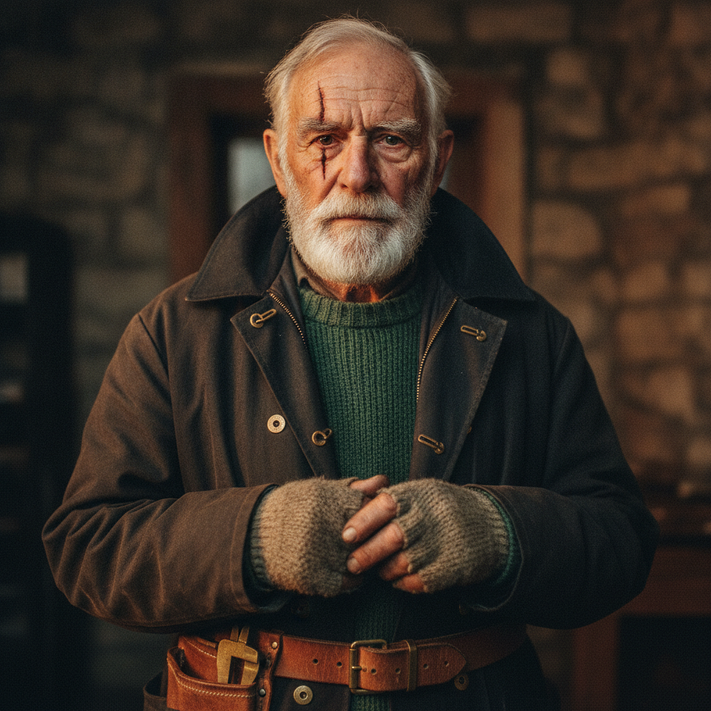
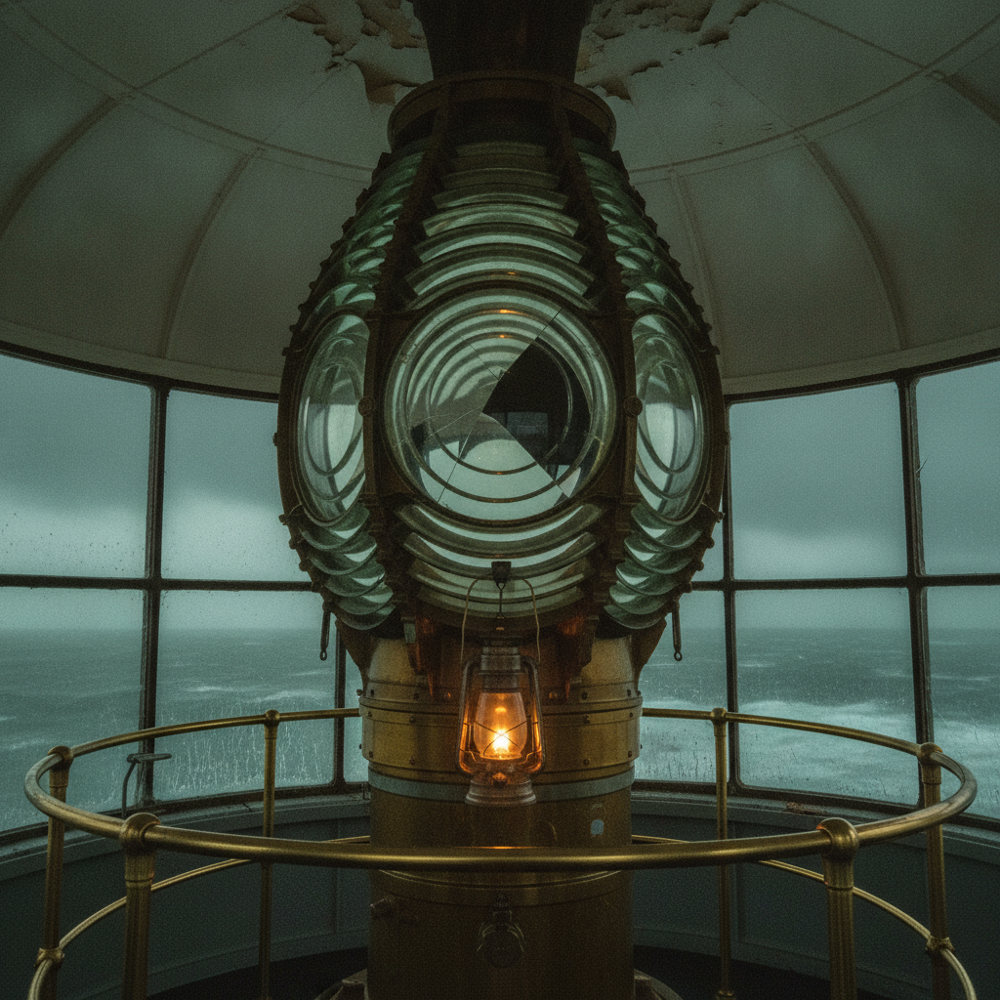
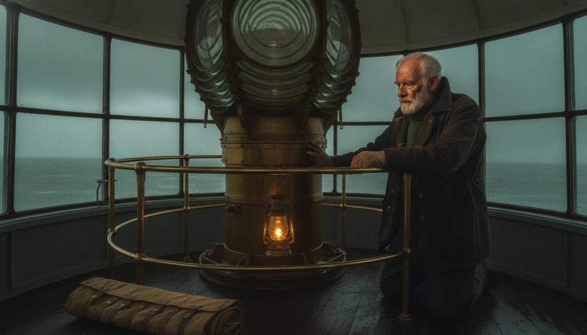

FTL Studio turns one sentence into a directed, multi-shot cinematic film — the same character and the same set in every shot. Open source, built on Google Veo 3.1, Gemini and Claude.
node ftl-studio.mjs "an old lighthouse keeper repairing the great lamp as a storm closes in" --shots 4



Everyone who has generated AI video knows the pattern — the first clip is magic, the second stars a different actor in a different room, and by the third your "film" is a slideshow of strangers. Text prompts cannot lock a face, because every generation re-imagines every visual fact.
| Stage | Output |
|---|---|
| Compile | plan.json — the reproducible film recipe: character, set, per-shot framing, motion prompts, audio |
| Canon | character.png, set.png — approved once, reused forever |
| Frames | shotN_frame.png — vision-audited before any video spend |
| Video | shotN.mp4 via Veo 3.1 or Gemini Omni Flash (image-to-video) |
| Film | film.mp4 — graded, hard-cut, mixed |
Generate a canon character still once, then composite every shot's first frame from that image and animate only approved frames. FTL Studio automates this and runs a vision judge on every frame before spending on video.
Yes — one command compiles the plan, generates the stills, animates each shot, and assembles the finished film.
Google's official formula: Cinematography + Subject + Action + Context + Style & Ambiance, with audio as separate SFX: and Ambient noise: sentences and dialogue in quotes. FTL Studio emits this automatically.
Google Veo 3.1 and Gemini Omni Flash today, selected by one config line. Adapters for Sora, Kling, Runway and Luma are open contribution issues.
The code is MIT licensed and free. Model usage is billed by Google and Anthropic; a --skip-video mode lets you approve plans and stills for cents first.